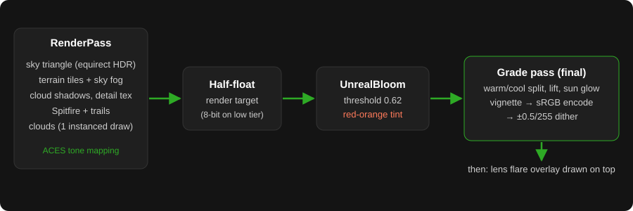
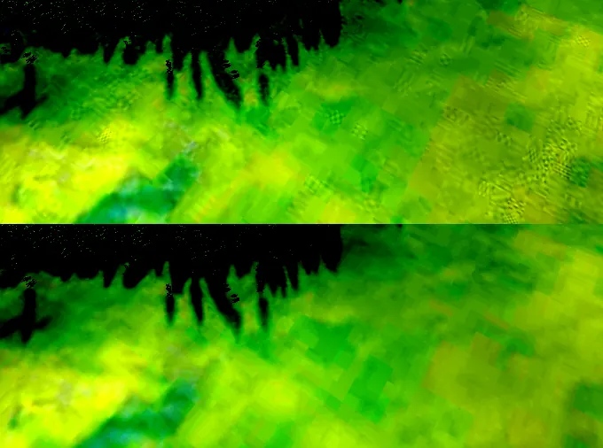
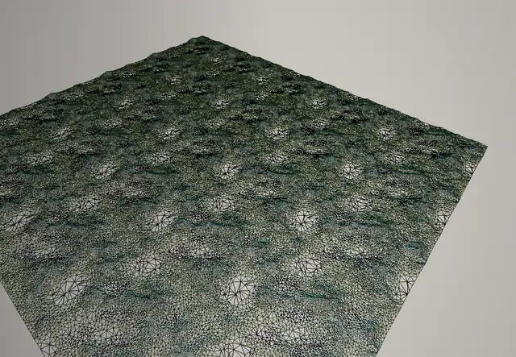
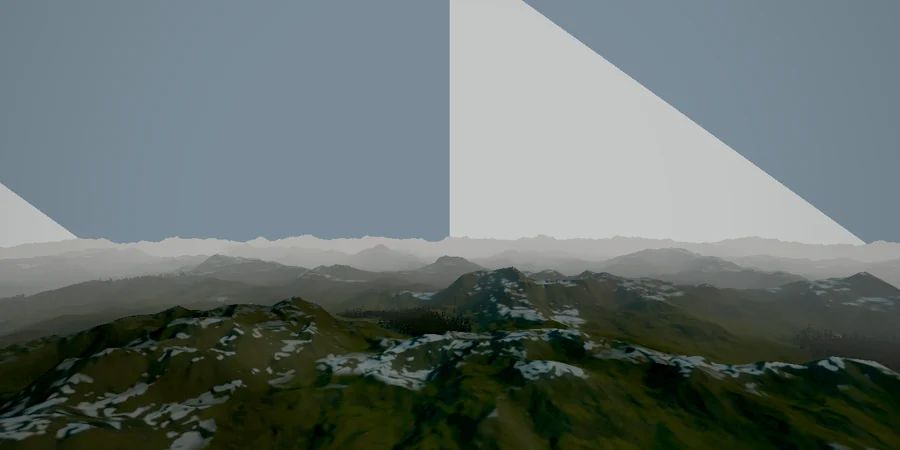
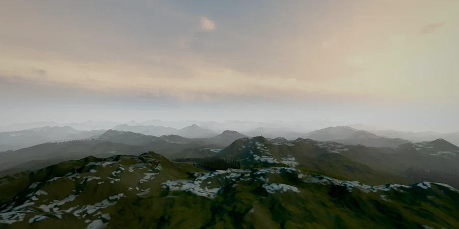
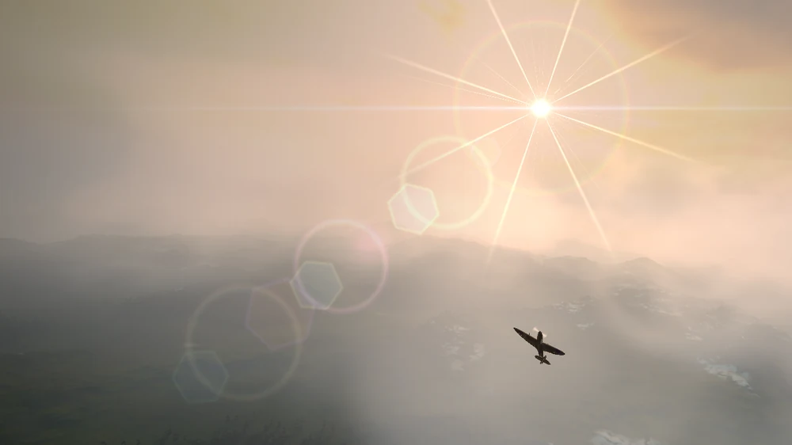
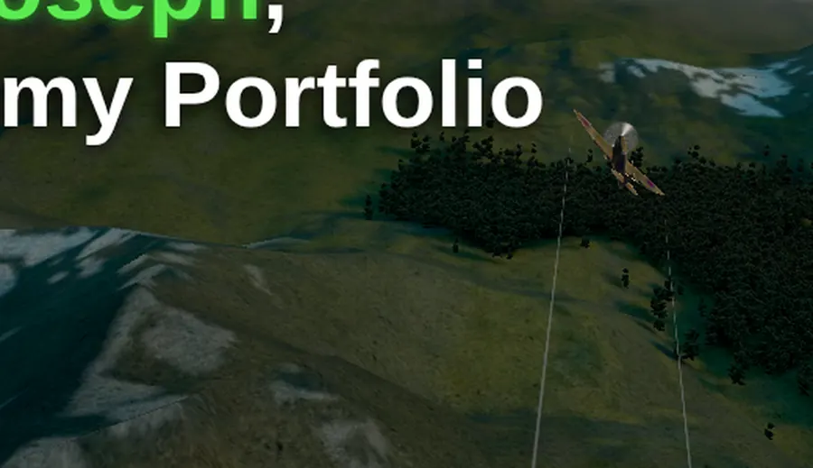
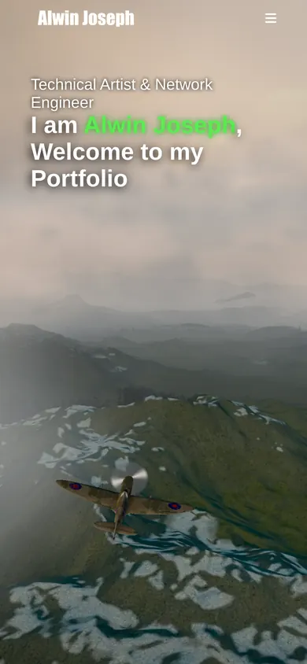

The flying Spitfire at the top of this site is a small real-time scene built with three.js. It started as a fun experiment and slowly turned into a technical art exercise: make it look like a golden-hour flight over the mountains, but keep it light enough that it never gets in the way of the page itself. Here is how it's put together, what I optimised, and a few things I tried and threw away.
The stack
The scene uses three.js r117 as an ES module straight from the jsDelivr CDN, with no bundler or build step. The aircraft is a small Spitfire
glTF with a separate albedo texture, and the terrain is a single landscape glTF that contains the land LODs and a scattered tree mesh.
The sky is an HDR loaded with RGBELoader as half-float, which lights the plane and doubles as the backdrop.

Weight first: Draco and a GIF lesson
The original land model was 17.65 MB. Running it through gltf-transform with Draco mesh compression brought it down to 1.87 MB, and three.js decodes it with the Draco WASM decoder from the same CDN. The terrain texture was a 2.4 MB, 2048 px GIF, and converting it to a quality-85 JPG made it about 444 KB. Overall, the 3D payload went from roughly 12 MB to about 4.4 MB.
The GIF taught me a lesson, though. My first JPG was converted from the GIF, so it inherited the GIF's 256-colour palette. On the dark, tone-mapped terrain this showed up as blotchy posterised patches and checkerboard dithering that looked exactly like a banding bug in the renderer. Re-exporting the JPG from the full-colour PNG master fixed it instantly.

Never block the page
The hero text paints immediately; the 3D scene starts only after the page has loaded and gone idle, or on the first interaction (scroll, pointer, key or touch).
When it starts, I inject modulepreload hints for every module and preload hints for the models, textures, HDR and Draco decoder,
so everything downloads in parallel instead of one request at a time. On a throttled connection that cut the time from the scene script request to all assets
loaded from 1.97 s to 1.66 s. Because the hints are injected at scene start, they never compete with the page content.
Rendering pauses completely when the hero scrolls out of view (an IntersectionObserver), when the tab is hidden, or when the user prefers
reduced motion; in that case a single still frame is drawn instead.
Endless terrain from a pool of 25 tiles
The terrain is a fixed pool of 5×5 tiles (each 1042 units), created once. When the plane crosses into a new cell, tiles that fall out of range are simply moved to the newly needed cells, with no cloning or allocation after start-up. Because the fog is fully opaque by about 1700 units, each tile only keeps two LODs: full detail up close and a cheaper mesh from 1500 units.

Fog that matches the sky
Linear fog hides the tile edges and lets me pull the camera's far plane in to 1.45× the fog distance. Two problems showed up. First, three.js r117 fogs by view depth, which is much shorter than the real distance at the edges of a wide, off-centre frustum, so tiles at the sides popped in unfogged. Overriding the fog chunk to use radial distance fixed that:
THREE.ShaderChunk.fog_vertex =
'#ifdef USE_FOG\n\tfogDepth = length( mvPosition.xyz );\n#endif';Second, a single fog colour never matched the sky: toward the sun the horizon is warm and bright, away from it cooler. So the terrain and tree shaders now sample the same equirectangular HDR per pixel in the view direction, with the same tone mapping, so fog equals the sky behind it. The colour difference at the horizon dropped from 13–25 to 3–5 (out of 255).


The sky itself is drawn as a single full-screen triangle that reads the equirect texture directly, instead of a low-resolution cube conversion that looked blocky.
Clouds in one draw call
The low clouds are 60 low-poly icosahedron puffs (35 on phones) in one instanced draw call. The CPU does nothing per frame except update a few uniforms: the vertex shader wraps every puff around a point slightly ahead of the camera, so the clouds stay in view forever.
c.xz = uWrapC.xz + mod(c.xz - uWrapC.xz + uRadius, 2.0 * uRadius) - uRadius;In the fragment shader, a fresnel term fades the faceted silhouette away, and three octaves of value noise shift the fade threshold so the edges become wispy instead of a clean gradient sphere. The same wind offset scrolls a small noise texture across the terrain as cloud shadows, so the two move together.

Light and colour
The look comes from a few cheap layers:
- Half-float composer target on desktop, so the dark, tone-mapped image doesn't band before post-processing.
- Bloom retuned to a high threshold and small radius, so only the sunlit highlights glow, with a red-orange tint for the sunset. My first version had a low threshold and covered the whole frame in a milky veil.
- One grade pass: warm highlights, cool lifted shadows, a soft glow around the sun's screen position and a vignette.
- Dither last: interleaved gradient noise of ±0.5/255 after the sRGB encode, which hides the remaining 8-bit steps.
- Procedural lens flare: starburst, halo and hexagonal ghosts drawn in shaders as an overlay, with no textures.
float ign = fract(52.9829189 * fract(dot(gl_FragCoord.xy, vec2(0.06711056, 0.00583715))));
gl_FragColor.rgb += (ign - 0.5) / 255.0;Terrain detail from one tiny texture
A single 2048 px map can't hold close-up detail, so I packed three CC0 ambientCG textures (snow, rock and grass) into the R, G and B channels of one 256 px JPG of about 26 KB. The shader picks a channel per pixel: bright base texels get snow, steep slopes get rock, and everything else gets grass. It's applied as a brightness modulation that fades out with distance, so the base map colours still dominate. That's one extra texture lookup.

A calm camera with a bit of wind
The Spitfire flies on a noise-driven flight controller: smooth random turns, banking into them, gentle climbs and dives within an altitude band. The camera follows with
frame-rate-independent exponential damping. Instead of aiming the camera away from the plane, I use camera.setViewOffset to place the plane at a chosen
point on screen: to the right of the headline on desktop, and lower and closer on phones.
setFrame(w, h) {
const f = w / h < 1 ? this.o.frameNarrow : this.o.frame;
this.camera.setViewOffset(w, h, (0.5 - f[0]) * w, (0.5 - f[1]) * h, w, h);
}On top of that sits a small wind shake: a slow sway plus a faster buffet, both sums of sines, scaled by a slow gust envelope and a little by the bank angle. It's applied after the look-at as a tiny rotation, so it never disturbs the framing, and it switches off for reduced motion.

Scaling down
Phones, small screens and low-memory devices get a lighter tier: pixel ratio 1, fewer clouds, 8-bit render targets, a smaller HDR and no detail texture. On every device, an adaptive quality check watches the frame rate; if it stays under 45 fps, it steps down in stages: pixel ratio 1, then no bloom, then a 30 fps cap with the clouds hidden.
What I threw away
I had a god-rays pass for a while. It never really worked here: the sky HDR has no bright sun disc for the rays to come from (the visible sun is the flare overlay, drawn after post-processing), so the mask stayed empty. I removed it rather than keep a pass that cost time and showed nothing. I also had a dogfight mode with enemy planes and tracers, which was fun but made the hero feel chaotic, so that went too.
Most of the work wasn't adding effects but finding why something looked wrong: a palette from a GIF, fog measured along the wrong axis, a bloom threshold that was far too low. Measuring first (pixel differences, unique colour counts, frame timings) saved me from fixing the wrong thing more than once.